Au cours des années, j'ai appris un grand nombre de logiciels et de langages de programmation dans des domaines divers et variés. Certains de mes projets sont trouvables sur mon GitHub.
Coder des sites web est l'une des premieres choses que j'qi appris en programmation mais celle que je maitrise le moins. J'ai toujours prefere la programmation de logiciel, d'algorythme mais jamais de designe. C'est pourquoi se site web reste assez simpliste. Malgrès tous j'ai appris le javascript, le php, html, le css,etc.
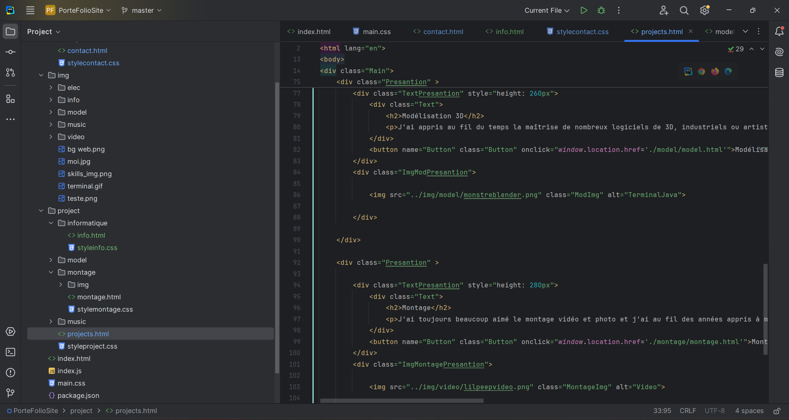
Webstorm sur le projet de ce site
L'une des raisons qui m'a poussé à m'intéresser au code était en partie le jeu vidéo. J'étais passionné par le fonctionnement et je rêvais d'en faire moi-même. J'ai alors commencé par le modding et plus précisément par les plugins Minecraft.
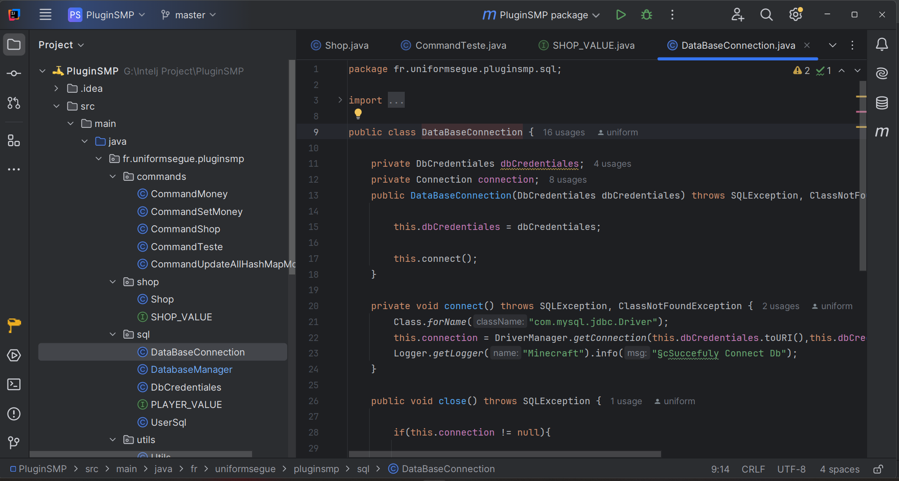
Plugin SMP Coder pour un serveur privé avec mes amis.
Après avoir codé des plugins et des logiciels, je me suis intéressé à la programmation de jeux via des moteurs comme Unreal Engine, libGDX (un moteur de jeu pour Java), Godot (un moteur de jeu sur la base du C#), etc. La plupart de mes projets de jeux n'ont jamais abouti car ils étaient plus des tests de physique, de gameplay, etc.
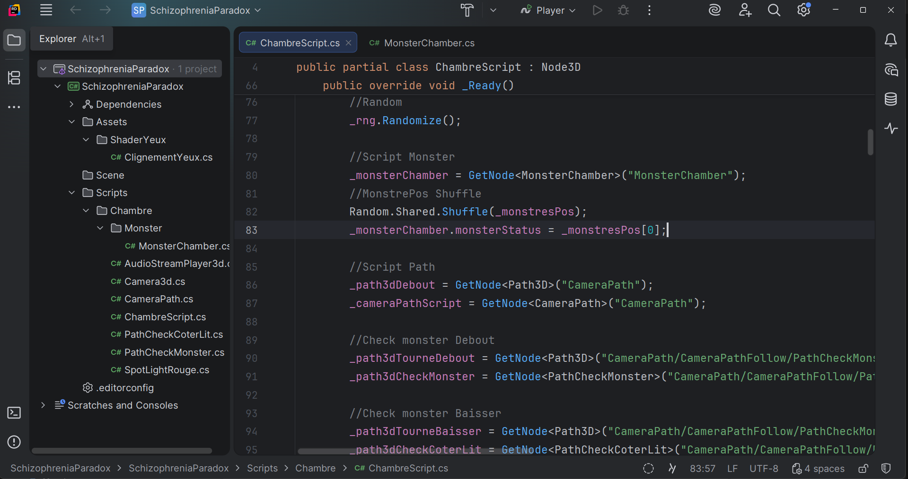
SchizophreniaParadox, le projet sur Rider.
Mes premiers pas dans le monde du game development ont été sur Unreal Engine avec des jeux simplistes et toujours sur un ton humoristique, comme le jeu Grillard. Le concept est très simple : on doit trouver 4 clés et sortir du niveau tout en évitant de se faire attraper... par un grille-pain. Le jeu est très simpliste mais possède un système d'items à ramasser, comme une lampe avec des piles ou un pied-de-biche pour ouvrir une porte fermée. Ces jeux m'ont surtout servi à comprendre le Blueprint et à me familiariser avec Unreal Engine.
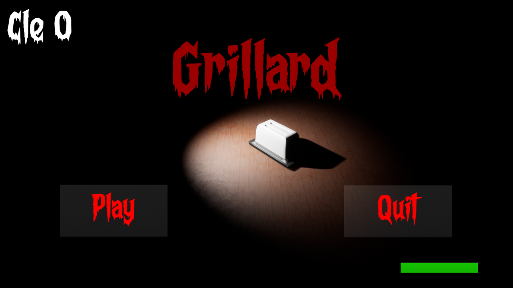
Grillard avec une interface bugguer.
Pour notre projet d'informatique à l'ENSIM, mon collègue et moi avons imaginé un jeu "Ocarina Hero", une alternative à Guitar Hero avec un ocarina, et j'ai codé le jeu intégré avec la manette. J'ai utilisé la librairie libGDX en Java pour avoir une base de moteur graphique. Pour l'instant, le jeu est en cours de développement et les sprites ne sont pas encore conçus. C'est mon binôme qui s'en occupe.
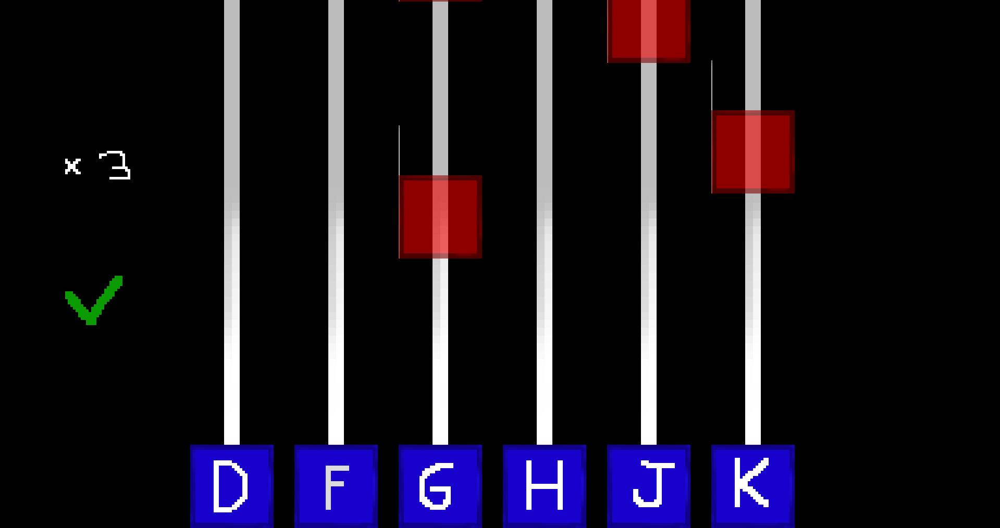
Premiere Version Ocarina Hero avec sprite Teste
SchizophreniaParadox est un jeu dont j'ai eu l'idée après avoir joué à un jeu qui est devenu un phénomène, FNAF. Le gameplay se base sur un système où le joueur peut simplement décider de bouger la caméra sur un rail et doit survivre dans différents niveaux en essayant de garder loin une hallucination cherchant à le rendre fou, tout en maintenant sa santé mentale. Le gameplay est plutôt basé sur de l'horreur psychologique et le sound design prend une partie importante de ce projet. J'ai designé tous les différents assets : monstres, chambres, mobilier, accessoires, etc.
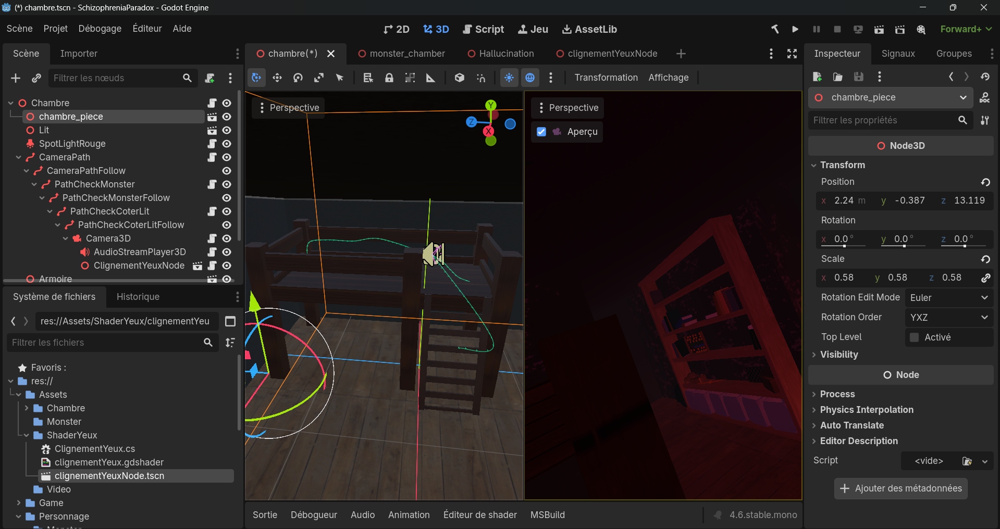
SchizophreniaParadox, un jeu que je code sur Godot
Lors de ma première année à l'ENSIM, nous avons dû réaliser un projet avec une expérience et la présenter. J'ai décidé de coder un petit jeu simple où un son apparaît dans une zone autour de soi, à une distance toujours égale dans un aléatoire contrôlé. C'est-à-dire que chaque zone aura forcément 4 fois un son qui apparaît dedans, et le but est de retrouver d'où vient le son. Ensuite, on calcule l'angle d'erreur et on en fait un fichier avec toutes les données pour les analyser. On répète l'expérience sur plusieurs jours et on regarde l'évolution.
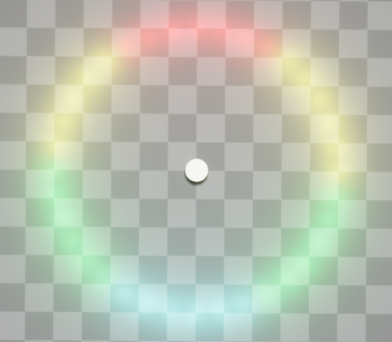
Image du jeu vu de haut.
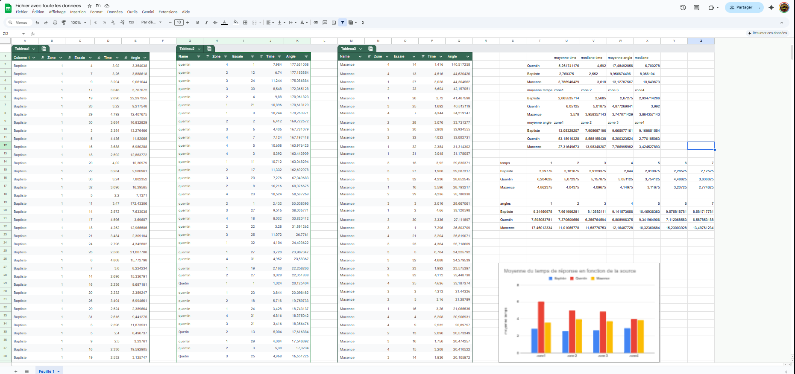
Fiche des données
La cyber est un domaine qui m'a toujours fasciné. J'ai fait des CTF, avec 200 points sur Root-Me. J'ai codé des sites de phishing et des ransomwares, testés sur VM et assez peu optimisés (ils mettaient 2h en temps réel à chiffrer tous les fichiers). J'ai tenté de comprendre le fonctionnement des botnets, des attaques DDoS, des différentes vulnérabilités présentes sur le web comme l'injection SQL, les XSS, etc. J'ai aussi tenté de résoudre des crackme en m'intéressant à l'assembleur, qui est, je dois l'avouer, assez ardu.
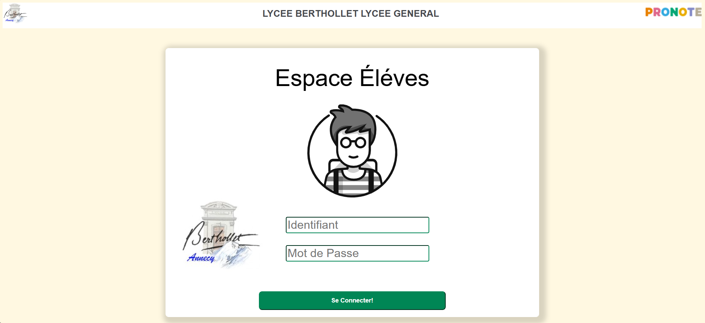
Site de phising base sur Pronote ( Jamais mis en ligne hein )
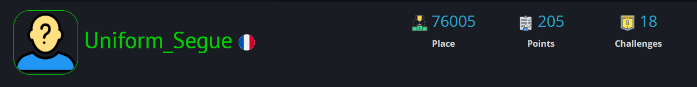
Root Me
Un des événements auxquels j'ai participé est les 24h du Code. Le concept est de coder pendant 24h avec un sujet donné. Notre thème était de coder une IA pour simuler un maître d'hôtel capable de prendre les réservations, d'ajouter une chambre, etc. Avec ma team, on était débutants et mes coéquipiers avaient peu d'expérience en code, alors j'ai codé en grande partie le projet. Le projet est trouvable sur mon github.
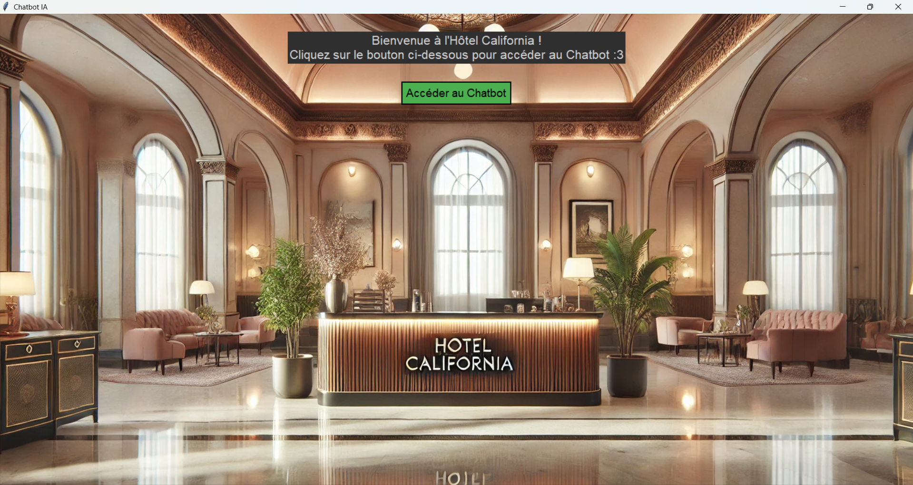
Page accueil
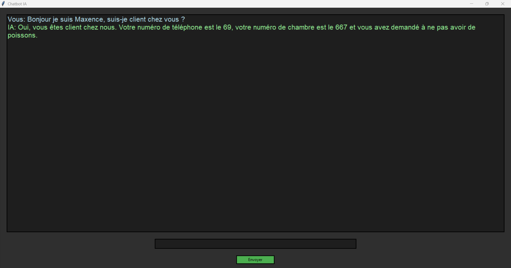
ChatBot
Je me suis aussi intéressé aux différentes distributions Linux comme Kali Linux pour la cybersécurité ou Ubuntu avec lequel j'ai rebooté un vieux PC pour le rendre de nouveau utilisable. J'ai aussi créé un serveur via un ZimaBoard que j'ai booté sous Ubuntu et auquel j'ai ajouté un serveur Apache, un accès SSH, ou même CasaOS, un système de Cloud open-source.
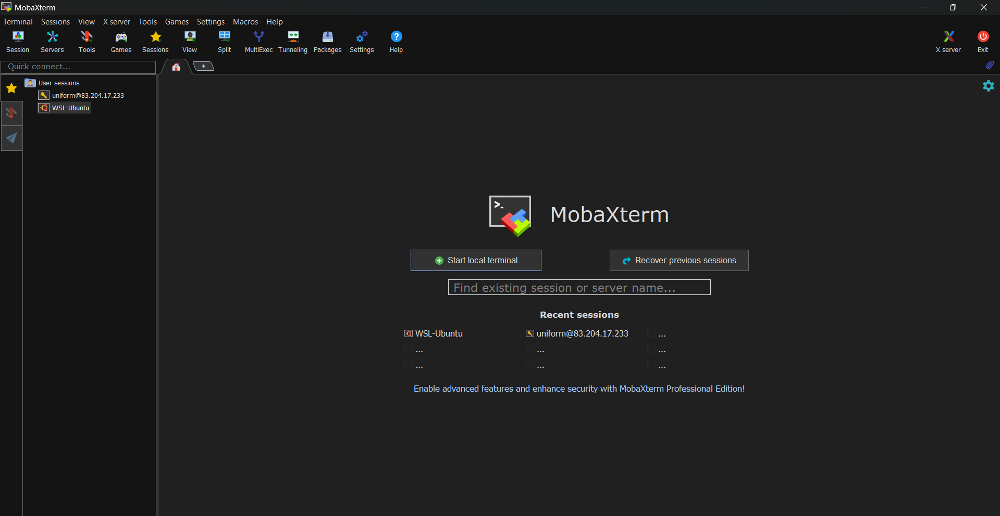
MobaXTern, lier a mon serveur